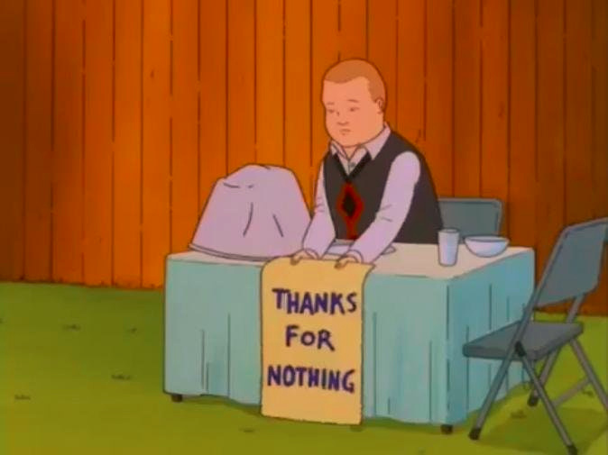

isn’t pkr a pr tho???
y

isn’t pkr a pr tho???
y
Her response to Vulgard is making her trend upwards to me, not exactly a lock-town but kind of fits in with her town response of getting pissed off at being wrongfully scumread rather than just sulk it up.
i’d rather have that then nothing at all
it also gives me their opinion which i’m fine with, as long as i ask others as well
Eh, that’s the advice I’m willing to bring up 
Still would rather Arete or Boss today. Both Solic and Squid have been improving to me.
Okay, at least Max hasn’t changed his playstyle.
Aaaand chat is gone
They talked about being a PR after they did that

The full read
Really not liking Alice here, to be honest. I skimmed her Iso and it doesn’t seem quite like town!Alice; honestly it’s weaker than I’d expect from wolf!Alice as well, but maybe I’m just getting better at picking up on her scumtells.
I cut out all the mechanics talk from her Iso since that’s NAI for her.
I tend to be wary of people third party/lostwolf hunting, villagers tend to look for scum while scum finds it a lot easier to see 3ps/consider 3ps as a possibility due to already knowing who the scumteam is.
If Alice flips scum I would look into this as potential W/W distancing, she scumreads Vulgard a couple of times but never really follows it up with anything, whereas normally when she pushes someone I’d expect her to do it more aggressively, if that makes sense.
Townlean on Astand, this is basically how she always reads Astand so I don’t know if we can glean anything from this. I don’t think she’d townread a wolfbuddy so early for so little reason so if she’s scum Astand is probably actually town.
This almost seems like TMI on Andrej, he’s posted like fifty words of content and townreading him based on that is kind of dumb. ‘Oh wow, he posted 50 words rather than 10, time to townread him!’
This is one of several questions Alice asks with no follow-up. Asking a bunch of people one or two questions and then dropping it is … well, it’s what got me caught in SF4, at the very least. I’d like to think Alice is a better scum player than that but I know she’s a better town player.
This is the start of Alice’s pressure attempt on Solic, more on this later.
Hedgy read on Tele, which is kind of scummy given the less flip-floppy stances she’s been taking on other people. If Alice flips wolf I’d look into Tele as a strong possibility for wolfbuddy due to Alice not wanting to take a strong stance on her
These posts together form the bulk of Alice’s push on Solic. These are probably the towniest posts in her Iso since they actually have, you know, a sustained push, but not enough to counteract the rest of it. If Alice flips scum I would probably clear Solic based off of them because I don’t think scum!Alice puts scum!Solic as her strongest scumread – Solic’s a pretty strong player, and thus not the sort I’d expect her to bus.
And here we go back to Alice Randomly Pings People To Look Contributive.
I don’t like how she’s not explaining her reads here at all.
Focusing on Magnus over any of the other inactives is really weird, there were several people at this point who hadn’t posted at all (I think Magnus included? not 100 percent positive) and she doesn’t give a reason for singling him out in particular (though I do agree that if Magnus keeps not posting that’ll be a scumtell for him).
The read on Astand here feels pretty genuine, I wouldn’t expect Astand to flip scum here. The comment on Vul still feels like W/W distancing, this is the second time she’s called them out for having too little “bite” and yet she never actually pushes on Vul apart from sticking them in a wolfy spot on her readlist.
This is above a readlist, or a readlist like thing. Honestly seems like a fairly townie post, but well within Alice’s wolfrange.
Firekitten read.
Quotes-within-quotes are kind of broken so I’m not sure I can properly quote the readlist but I’m finding it really weird how Alice is ranking slankers so wildly differently, like obviously you can metaread some people (e.g. lurking Hja basically confirms her as scum) but if they’re perpetual slankers it shouldn’t give you more information about some than about others.
An Alice scum flip spews Solic as definitely town in my opinion, I don’t think she ever puts a scummate as her strongest scumread and then deathtunnels him.
So the thing is, when you claim Priest as NK even once no one will ever believe you again when you say your role is self-resolving. Obviously you can roll self-resolving roles as town but claiming to be self-resolving is NAI at best and I’m not going to let you randomly get away with it for no reason.
“I’ll be basically an IC after I use Channel tonight”
Kind of not liking the hedginess here, it feels like she’s trying to set up mislynches and then justify them with ‘well, I said I wasn’t liking my reads.’
Why would you ever say this as town? Unless you’re a Hunter-equivalent or something you’re basically saying ‘HELLO WOLVES, I AM IMPORTANT, COME NIGHTKILL ME PLEASE,’ which is obviously a dumb thing to do as a power role.
So yeah, I’m really not liking Alice’s Iso here, it feels like scum!Alice trying to look contributive and solvey without actually being contributive and solvey, the random pings on specific people with no follow-up are scummy as heck from her in particular. I know I always scumread Alice but I’m pretty sure she’s actually scum this time.
/spiritually vote Alice since we can’t actually vote yet
Vulgard what do you know about the forums and everything that happened to it between the time you left and now
G i v e f u l l r e a d p l e a s e
maybe in 10 years after I finish reading arete wall post
Sad
Aaaaand she hadn’t even posted this yet when I was doing her Iso.  Pretty sure we have a word for ‘scumreading someone just because they scumread you.’
Pretty sure we have a word for ‘scumreading someone just because they scumread you.’
Uh…
Do you want another wallpost?
Yes
kinda into helms deep or rohan for today tbh
lmao